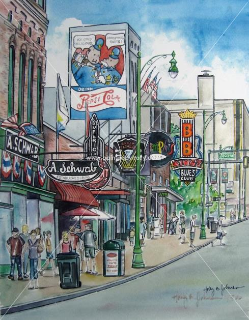

Day 23 Monday Nov 14
Memphis to Crystal Lake, Il 599 miles

Before Leaving Memphis
We only did a couple of things in Memphis this time, since it was meant to be a great ending to a great trip. We’ve been there many times before and done a lot of different things. I don’t want to leave anyone thinking there is not much to do there. There is! You can easily spend a week there and still not be able to do everything. Here’s some links of things to do if you wanna visit Memphis.
Some Ideas – Lots of things to do in Memphis.
Old Dominick Tennessee Whiskey Tour – A great tour of the comeback of an older Memphis Distillery. They have a great Rye Whiskey!
Safari Park – This is outside Memphis (east), but it’s great. Animals walking all over.
Homeward Bound
We hopped into our trusty Nissan Rogue2(We have 2; we love ‘em!), and drove home listening to SiriusXM Satellite Radio Station “Outlaw Country” all the way home, and lived happily ever after.
Home to Index Page “Living Happily Ever After” or